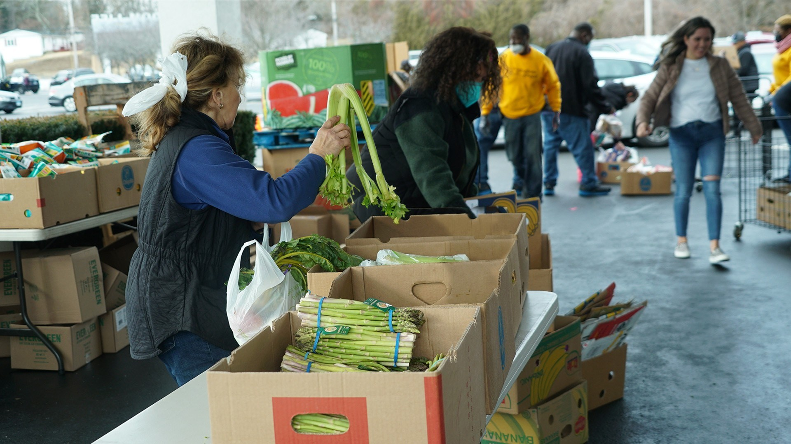

Find community / KINGDOM LIFE
YOUR GIFTS.
OUR COMMUNITY.
01 / Serve
Join Our Team
You were created on purpose and for a purpose. The gifts and skills that God has designed you with are how you can best represent Him. We believe there is no better way to develop and grow in those gifts and skills than in serving on a team in a specific ministry.
02 / Serve
Each of you should use whatever gift
you have received to serve others, as faithful stewards of God’s grace in its various forms. // 1st Peter 4:10
Explore community
Find your people.